Top 10 Feiticeiros mais fortes da Era Moderna em Jujutsu Kaisen
Megumi Fushiguro
Megumi Fushiguro é o deuteragonista da série Jujutsu Kaisen. Ele é um feiticeiro de jujutsu de grau 2 e aluno do primeiro ano na escola de jujutsu de Tokyo ao lado de Yuji Itadori e Nobara Kugisaki. Megumi é o meio-irmão de Tsumiki Fushiguro e como filho de Toji Fushiguro, Megumi também é descendente do Clã Zenin. Megumi nasceu fora do clã como trunfo de Toji e acabou sendo encontrado por Satoru Gojo, que o orientou e o matriculou no Jujutsu High como seu aluno.
Técnica Herdada
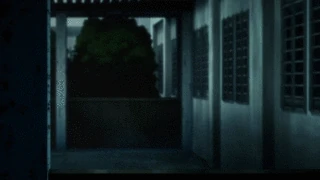
A Técnica das Dez Sombras (Tokusa no Kagebōjutsu): É uma técnica originada da Família Zenin, com ela o usuário possui acesso a 10 diferentes shikigamis que podem ser usados em batalha, porém ele precisa derrota-los para poder ter o controle deles.
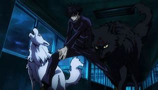
Cães Divinos (Gyokuken): Os cães Divinos são os Shikigamis iniciais atribuidos ao usuário da técnica, não precisando ser derrotados para que seu dono os comande.
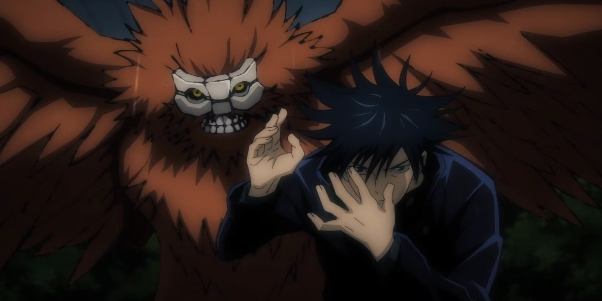
Nue (Nue): Nue é um Shikigami alado que possui uma grande velocidade e asas de choque elétrico, além de poder levar pessoas em cima dele.
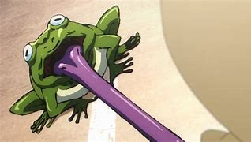
Sapo (Gama): O Sapo é um Shikigami sapo que é capaz de prender e arremessar os alvos, e por ser grande pode carregar pessoas feridas dentro de sua boca.
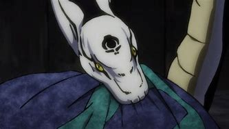
Grande Serpente (Orochi): A Grande Serpente é uma cobra gigante Shikigami que pode atacar rapidamente e imobilizar os alvos, podendo fazer um ataque surpresa.
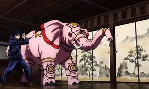
Elefante Máximo (Banshō): O Elefante Máximo é um Shikigami elefante capaz de expelir grandes volumes de água de sua tromba. Também pode esmagar alvos com seu peso.
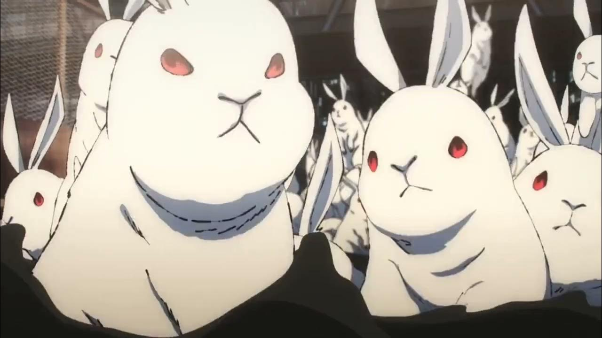
Fuga do Coelho (Datto): A Fuga do Coelho é uma grande quantidade de Shikigami de coelho que é utilizado como uma distração para que o usuário consiga fugir do perigo.
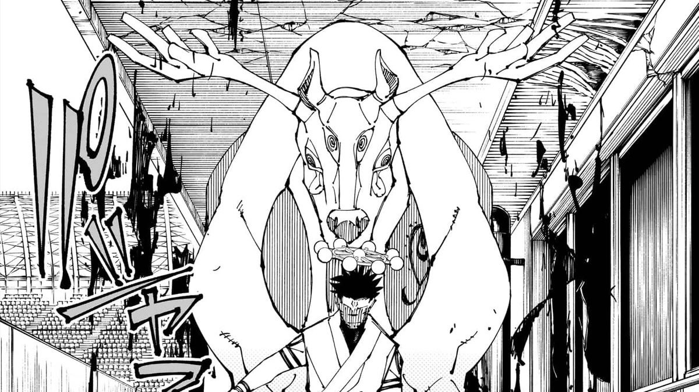
Cervo Circular (Madoka): O Cervo Circular é um cervo Shikigami que é capaz de curar através da técnica amaldiçoada reversa.
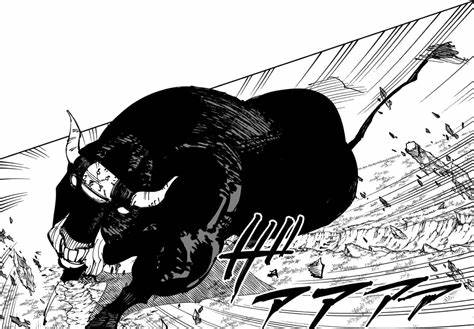
Touro Perfurante (Kangyū): O Touro Perfurante é um Shikigami touro que só é capaz de se mover em linha reta, mas em compensação quanto maior for a distância que ele percorrer, maior será o dano causado no alvo.
Tigre Mórbido (Kosou): Tigre Mórbido é um shikigami com capacidades desconhecidas.
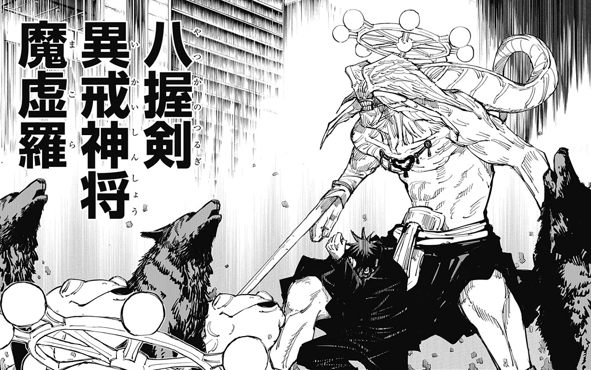
Espada de oito manuseos Divergente Sila Divino General Mahoraga (Yatsuka-no-Tsurugi Ikaishinshō Makora): Mahoraga é um shikigami humanóide, além de ser o shikigami mais poderoso das 10 sombras. Mahoraga possui a Espada do Extermínio que é uma arma amaldiçoada sendo uma lâmina especializada para espíritos amaldiçõados que está envolta em energia positiva. Mahoraga também possui a capacidade de se adaptar a qualquer alvo, situação e até mesmo o usuário da técnica.
Expansão de Domínio
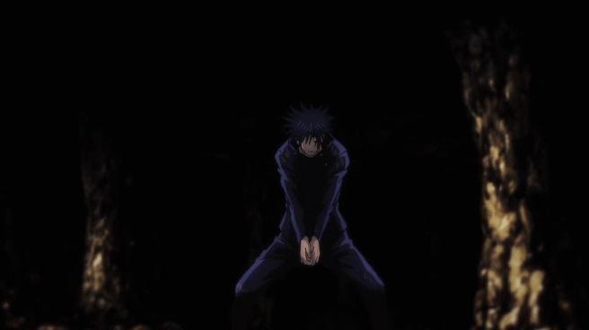
Jardim das Quimeras Sombrias(Kangō An'eitei): A expansão de domínio de Megumi é capaz de criar uma área completamente inundada de sombras, onde Megumi não só pode invocar diversos Shikigamis como também manipular essas sombras, sendo capaz de se esgueirar pelas sombras para atacar o ponto cego do seu adversário.
Maki Zenin é um personagem coadjuvante importante em Jujutsu Kaisen e um dos principais protagonistas de sua prequela, Jujutsu Kaisen 0. Atualmente, ela está no segundo ano na escola de Jujutsu de Tokyo. Filha de Ogi Zenin e irmã gêmea mais velha de Mai Zenin, Maki nasceu no Clã Zenin.
Restrição Celestial
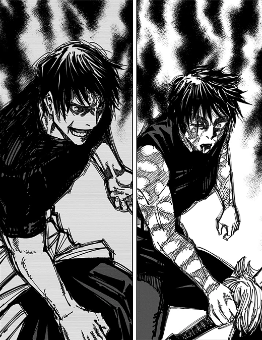
A pequena quantidade de energia amaldiçoada que Maki possuía estava impedindo sua Restrição Celestial. Em troca de escapar completamente da energia amaldiçoada, Maki recebeu um "corpo de aço".
Ferramentas Amaldioçadas
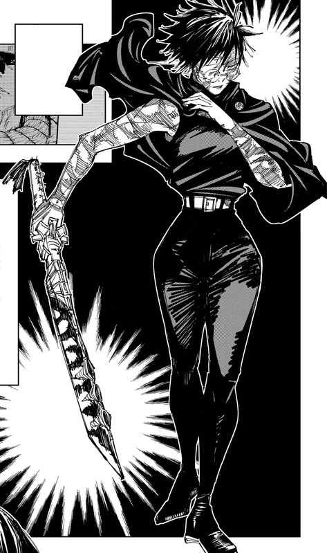
Osso de Dragão (Ryūkotsu): Dragon-Bone é a obra-prima de Juzo Kumiya. Ela pode acumular força cinética e energia amaldiçoada, bem como liberá-las para fora da lâmina de acordo com a vontade do usuário que a empunha.
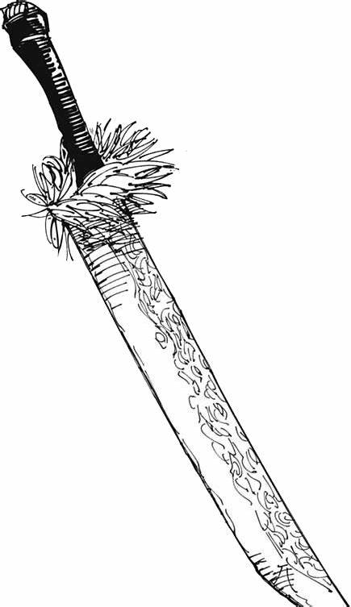
Réplica da Katana Alma Dividida (Shakukon Tō): A espada que Mai deixou para Maki é uma réplica exata da Katana Split Soul. Ela é a última conexão de Maki com sua irmã e possui a capacidade de atravessar barreiras de energia e acertar a alma de um indivíduo, independente se ele estiver vivo ou morto.
Hiromi Higuruma é um advogado que muitas vezes assumiu casos impossivelmente difíceis para proteger os acusados injustamente. Tendo desistido completamente do sistema de justiça, Hiromi atualmente participa do Jogo do Abate como um dos melhores jogadores. Ele inicialmente serve como um antagonista do Arco do Jogo do Abate antes que uma mudança de coração o leve a cooperar com Yuji Itadori.
Shikigami
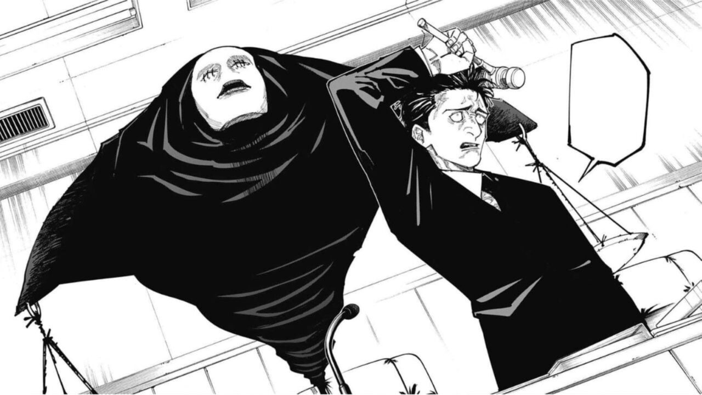
Juiz (Jajjiman): Hiromi possui uma técnica que faz com que ele consiga conjurar um grande shikigami com um corpo negro contendo 3 pontos esbugalhados que agem como dois braços e uma perna.
Manipulação de Energia Amaldiçoada
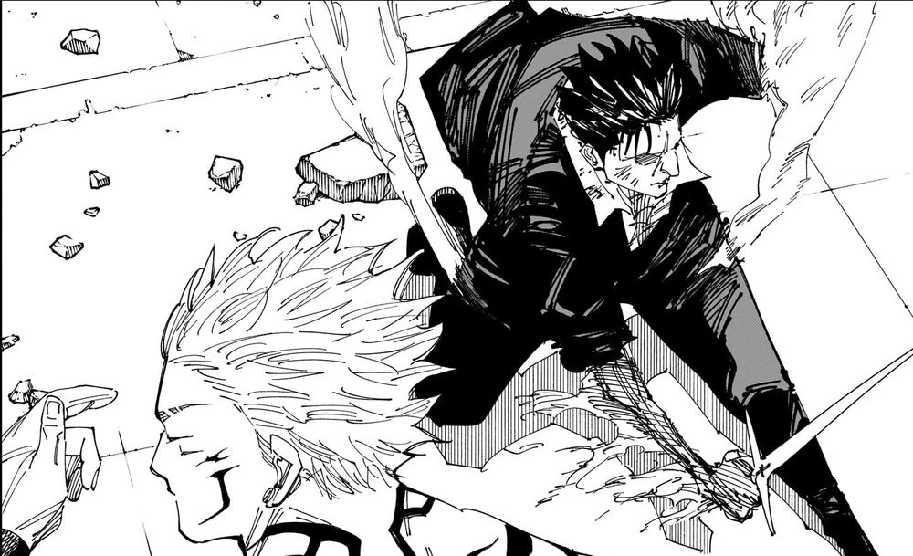
Técnica Amaldiçoada Reversa (Hanten Jutsushiki): O talento genial de Hiromi em jujutsu permitiu-lhe compreender o complexo processo da técnica amaldiçoada reversa em menos de dois meses após o despertar como um feiticeiro de jujutsu. Usando a técnica amaldiçoada reversa, ele regenerou seu braço e curou suas pernas depois que elas foram cortadas pelo Desmantelar de Sukuna.
Técnica Anti-Domínio
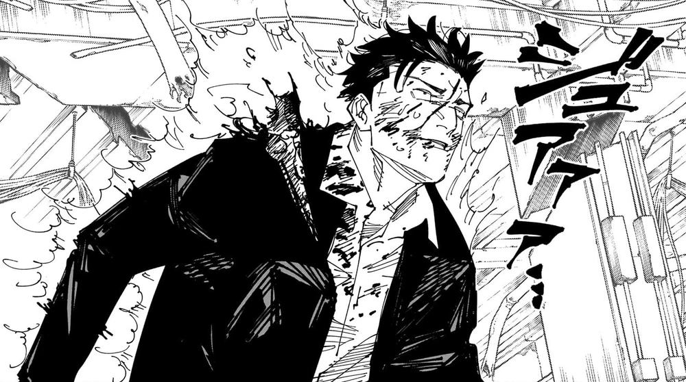
Amplificação de Domínio (Ryō'iki Ten'en): Expande o domínio de Hiromi sobre seu corpo como uma aura, permitindo-lhe neutralizar técnicas amaldiçoadas que entram em contato físico com ele. Enquanto a amplificação de domínio está ativa, sua técnica inata não pode ser ativada.
Expansão de Domínio
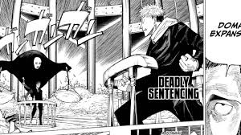
Sentença Mortal (Chūbuku Shishi): A técnica inata de Hiromi está ligada à sua Expansão de Domínio por padrão. Ela é um tribunal e a violência dentro dela é proibida. O Juiz flutua atrás de Hiromi que atua como promotor, o Juiz conhece tudo sobre os participantes, fornecendo evidências para Hiromi. Um veredito de culpado pode resultar no Juiz confiscando a técnica inata do réu ou, se o réu não possuir uma, impedir o uso de energia amaldiçoada. Em alguns casos, o veredito pode ser a pena de morte, o que concede a Hiromi a Espada do Carrasco, capaz de matar instantaneamente qualquer um que seja cortado por ela.
Suguru Geto é um antagonista tanto na série Jujutsu Kaisen quanto em sua prequela Jujutsu Kaisen 0. Ele foi originalmente um aluno de Masamichi Yaga ao lado de Satoru Gojo e Shoko Ieiri na escola de jujutsu de Tokyo. Suas experiências como feiticeiro de jujutsu geraram um profundo ódio por não-feiticeiros, levando a um incidente onde Suguru massacrou mais de cem civis em uma única noite. Ele foi expulso da escola de jujutsu e passou a ser conhecido como o pior de todos os usuários de maldição. Ele foi morto por Satoru Gojo.
Técnica Inata
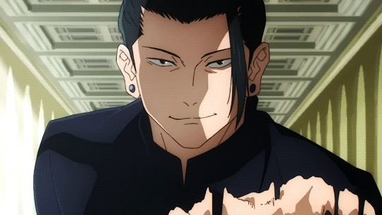
Manipulação de Espiríto Amaldiçoado (Jurei Sōjutsu): Suguru Geto é capaz de armazenar maldições após derrota-lás, tornando-as suas. Caso a maldição seja pelo menos 2 graus abaixo do seu, ele pode absorve-lá sem a necessidade de um confronto.
Máximo: Uzumaki (Gokunoban・Uzumaki): A técnica máxima de Manipulação de Espírito Amaldiçoado combina um grande número de maldições coletadas em um ataque poderoso. Suguru usou mais de quatro mil maldições em sua técnica máxima durante o clímax de sua batalha com Yuta e Rika.
Técnicas de Barreira
Cortina (Tobari): Um tipo de barreira que é lançada sobre uma grande área para esconder tudo dentro dela do mundo exterior. Suguru pode lançar cortinas capazes de prender feiticeiros dentro dela e pode fazê-la sobre a barreira de outro feiticeiro mais fraco também.
Fumihiko Takaba é um comediante fracassado que foi uma das muitas pessoas normais transformadas em feiticeiro por Kenjaku para participar do Jogo do Abate.
Técnica Inata
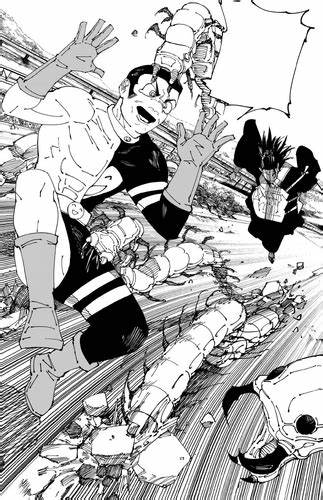
Comediante (Komedian): Quando Fumihiko pensa em algo que ele tem certeza que será engraçado, isso se torna realidade. É uma técnica com potencial suficiente para ferir até mesmo a Satoru Gojo, mas Fumihiko é não possui noção nenhum de seu próprio poder. Assim, pouco se sabe sobre como a técnica funciona ou como traz seus pensamentos humorísticos para a realidade. O comediante também se aplica a outras pessoas além de Fumihiko, como visto quando ele força a escrita a aparecer no rosto de Kenjaku. Se Fumihiko desacreditar de suas habilidades como comediante, a técnica será desativada até que ele recupere a confiança, deixando-o vulnerável.
Kinji Hakari é um estudante do terceiro ano da escola de jujutsu de Tokyo que está atualmente suspenso por entrar em conflito com a autoridade. Enquanto está longe da escola, Kinji está administrando o Gachinko Fight Club, um local para combate corpo a corpo entre feiticeiros por dinheiro.
Técnica Inata
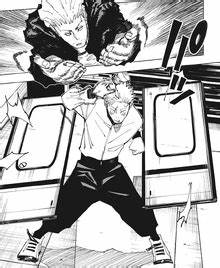
Trem do Amor Puro Privado: Uma técnica temática de pachinko que é aplicada principalmente através da expansão de domínio. A técnica amaldiçoada imbuída no domínio manifesta Private Pure Love Train, um jogo de pachinko inspirado na série de mangá de romance homônima. No entanto, Kinji pode invocar os indicadores de efeito visual do jogo, como as portas do obturador fora de seu domínio.
Expansão de Domínio
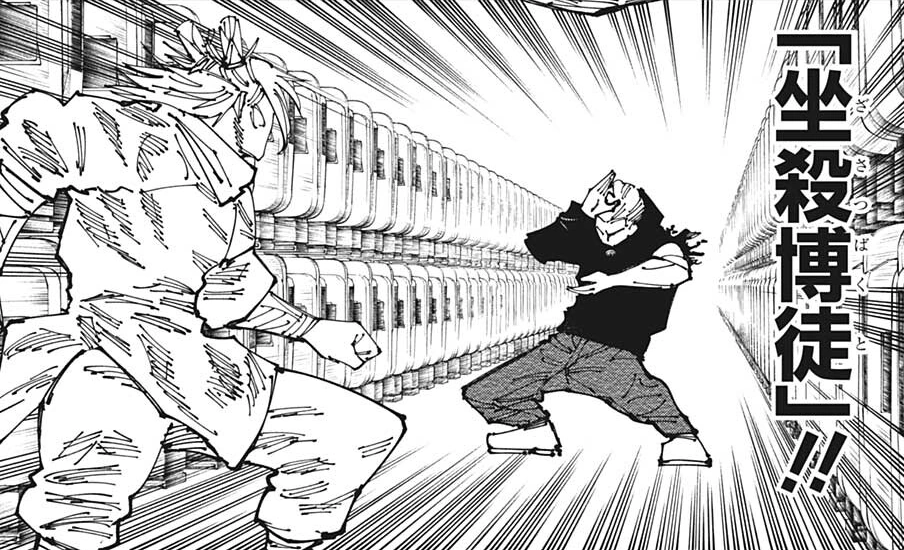
Aposta da Morte Ociosa (Zasatsu Bakuto): Uma expansão de domínio com tema pachinko que cria um ambiente semelhante a uma estação de trem que hospeda um jogo de azar. O principal objetivo de Kinji é alinhar três dos mesmos números para acertar um jackpot com apenas 1/239 de chance de acerto.
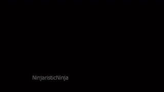
Modo Unkillable: Acertar o jackpot da Aposta da Morte Ociosa concede a Kinji um bônus de energia amaldiçoada ilimitada por quatro minutos e onze segundos, a duração exata da música-tema do Private Pure Love Train "Admiring You", que toca durante toda a rodada. A energia amaldiçoada ilimitada faz com que o corpo de Kinji use reflexivamente a técnica de maldição reversa para curar automaticamente qualquer lesão, tornando-o temporariamente imortal após acertar um jackpot.
Yuji Itadori é filho de Jin Itadori e Kaori Itadori, e neto de Wasuke Itadori. Yuji estava vivendo uma vida normal na cidade de Sendai até encontrar Megumi e comer um dos dedos de Sukuna. Depois de se tornar o receptáculo de Sukuna, Yuji começou a frequentar a escola de jujutsu de Tokyo ao lado de Megumi e Nobara como alunos do primeiro ano.
Manipulação de Energia Amaldiçoada
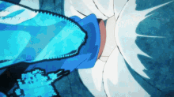
Punho Divergente (Keitei Ken): Depois que Yuji desfere um soco em um alvo, sua energia amaldiçoada flui e faz um segundo impacto mais forte.
Flash Negro (Kokusen): Black Flash é uma distorção no espaço que ocorre quando a energia amaldiçoada é aplicada dentro de 0,000001 segundos de um acerto físico. Quando um feiticeiro é capaz de fazer isso, sua energia amaldiçoada pisca em preto, e o poder destrutivo de seu golpe é igual a um golpe normal elevado a 2,5.
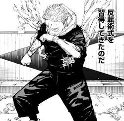
Técnica Amaldiçoada Reversa (Hanten Jutsushiki): Itadori atualmente é capaz de utilizar a técnica reversa para poder se curar, isso foi mostrado durante sua luta contra Ryomen Sukuna.
Técnica Inata
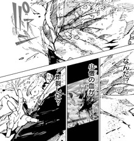
Manipulação de Sangue (Sekketsu Sōjutsu): Itadori é capaz de usar uma técnica chamada manipulação de sangue, ele pode fazer desde uma armadura de sangue até atirar projetéis de sangue.
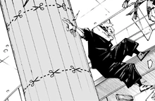
Santuário (Mizushi): A técnica de Ryomen Sukuna foi gravada em Yuji e agora ele pode usa-lá, embora com algumas diferenças. Ao contrário de Sukuna, Yuji cria linhas tracejadas com tesouras em qualquer coisa que ele toca que são posteriormente cortadas ao longo dessas linhas.
Técnica Anti-Domínio
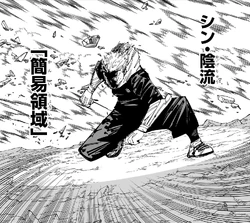
Estilo da Nova Sombra: Domínio Simples (Shin Kageryū: Kan'i Ryōiki): Itadori atualmente é capaz de utilizar o domínio simples, que é uma habilidade defensiva contra expansões de domínios.
Yuki Tsukumo é uma das quatro feiticeiras de jujutsu de grau especial. Yuki não está alinhada com a escola de jujutsu, então sua reputação a pinta como a única feiticeira de grau especial que não assume missões. Na verdade, Yuki simplesmente não concorda com os métodos dos superiores e trabalha para um mundo livre de maldições à sua maneira.
Técnica Inata
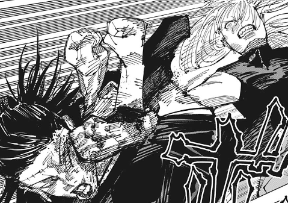
Fúria Estelar: A técnica inata de Yuki permite que ela conceda massa virtual para si mesma e seu shikigami, Garuda.
Manipulação de Energia Amaldiçoada
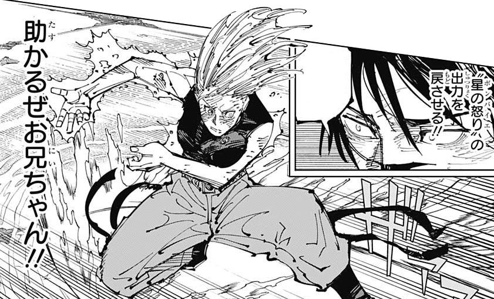
Técnica Amaldiçoada Reversa (Hanten Jutsushiki): Yuki é capaz de utilizar a técnica amaldiçoada reversa para se curar. Ela usou isso durante sua luta no reino do Mestre Tengen, depois que ela foi severamente machucada pela técnica certeira da Profusão Útero de Kenjaku.
Shikigami
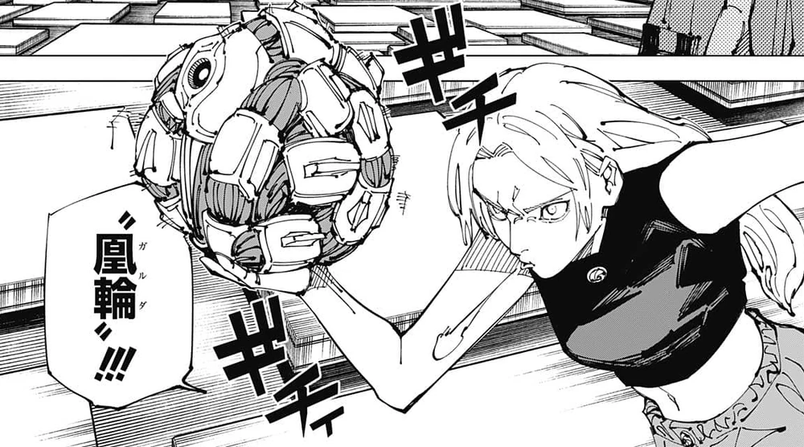
Garuda (Garuda): O shikigami de Yuki está diretamente ligado à sua técnica inata. Ao ter massa virtual adicionada a ela por Fúria Estelar, Garuda se torna uma ferramenta amaldiçoada para Yuki utilizar em batalha. Garuda também pode lutar e conter os oponentes de Yuki de forma independente, criando situações onde eles lutam lado a lado.
Técnicas Anti-Domínio
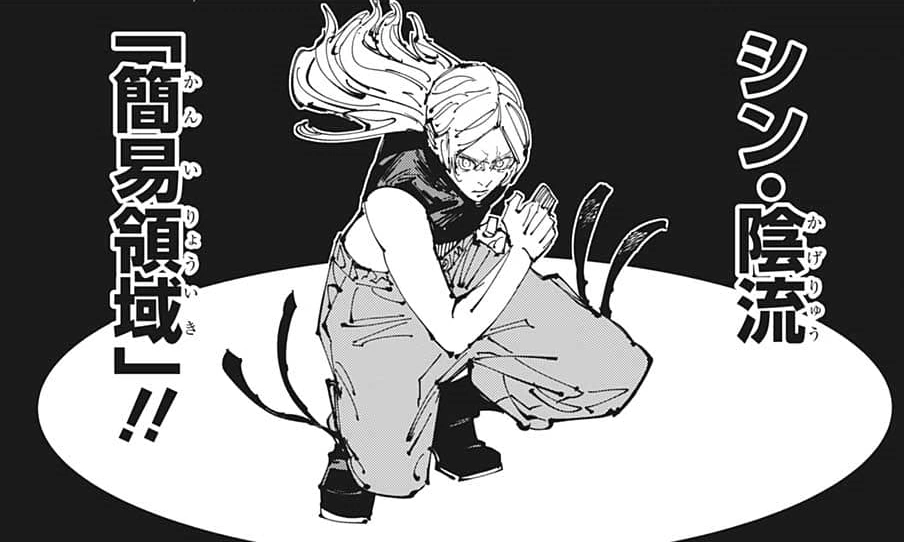
Domínio Simples (Kan'i Ryōiki):Uma técnica antidomínio que resiste a uma expansão de domínio não pode perder o ataque, mirando e neutralizando sua barreira. Yuki também ensinou Aoi Todo a usar essa técnica. Contra Kenjaku, o Domínio Simples de Yuki foi rapidamente removido pela Profusão Útero.
Expansão de Domínio
Embora não tenha sido mostrado, Yuki é capaz de expandir seu domínio inato e imbui-lo com sua técnica inata. Yuki e Tengen falaram sobre Yuki usando sua expansão de domínio contra Kenjaku enquanto eles estavam elaborando seu plano. No entanto, para evitar queimar a técnica amaldiçoada após a expansão do domínio, Tengen convenceu Yuki a usar um domínio simples em vez de seu próprio domínio.
Yuta Okkotsu é um personagem coadjuvante importante na série Jujutsu Kaisen e o protagonista principal de sua série prequel, Jujutsu Kaisen 0. Ele foi inicialmente um humano amaldiçoado de grau especial assombrado por sua amiga de infância, Rika Orimoto. Satoru Gojo orientou Yuta e o matriculou na escola de jujutsu de Tokyo.
Rika
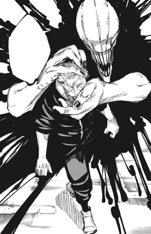
Rika: O espírito amaldiçoado que permanece com Yuta depois que Rika Orimoto faleceu. Ela serve como armazenamento externo para as técnicas amaldiçoadas e ferramentas amaldiçoadas de Yuta. Yuta tem um controle muito maior sobre essa versão de Rika, mas essa maldição mantém a mesma natureza imatura e protetora que ela tinha antes. Rika pode parcialmente se manifestar e atacar para proteger Yuta sem que ele ordene que ela o faça. Ela normalmente age sob os comandos de Yuta, mas ela pode agir de forma independente a uma distância razoável de Yuta para executar tarefas separadas também.
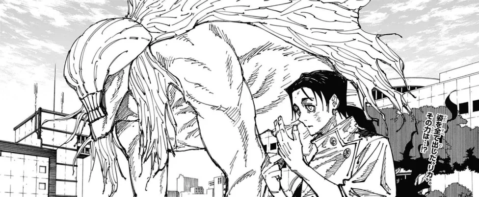
Manifestação Completa: Enquanto conectado a Rika através de seu anel, Yuta pode manifestar totalmente Rika, usar técnicas amaldiçoadas e acessar seu suprimento de energia amaldiçoada para reabastecer a sua. Rika também pode armazenar uma ampla gama de ferramentas amaldiçoadas e pode equipá-las para Yuta. Yuta pode manter uma conexão com Rika e permanecer neste estado por cinco minutos.
Técnica Inata
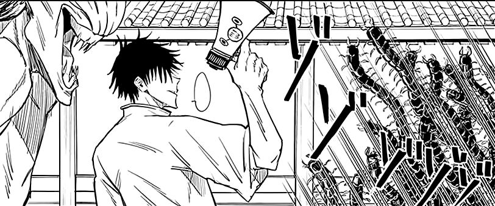
Copiar (Kopī): Enquanto conectado a Rika, Yuta pode copiar técnicas inatas e usá-las. Ele pode até usar várias técnicas diferentes que ele copiou em rápida sucessão. As condições sob as quais ele pode copiar uma técnica não são totalmente conhecidas, mas está implícito que ele ganhou a habilidade de copiar a de Uro quando Rika consumiu seu braço.
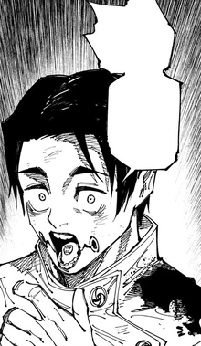
Discurso Amaldiçoado (Jugon): Yuta replicou a habilidade de Toke de usar a fala amaldiçoada, uma técnica geralmente herdada através da linhagem da Família Inumaki. Quando ele a usou pela primeira vez, Yuta executou a técnica usando um megafone que Rika convocou que tinha o símbolo Snake Eyes and Fangs. Ao falar através do megafone, Yuta ordenou que cada um dos enxames de maldições de grau inferior de Geto morresse de uma vez. Desde então, Yuta tornou-se mais proficiente com a fala amaldiçoada. Enquanto conectado a Rika através do anel, Yuta pode até fazer com que as insígnias Snake Eyes e Fangs apareçam em sua boca como se ele tivesse nascido com ela. Isso permite que ele ative a técnica falando comandos da mesma maneira que Toge faz.
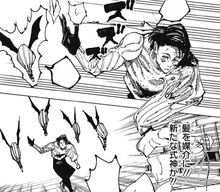
Shikigami (Shikigami): Yuta pode invocar shikigamis usando como meio o seu cabelo. Os shikigami aparecem como pequenos morcegos com cabeças semelhantes às de Rika. Eles voam ao redor do oponente para formar uma esfera, sua trajetória orbital constitui um domínio que pode cortar qualquer um dentro dele. Yuta copiou esta técnica de Dhruv Lakdawalla.
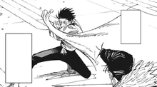
Manipulação do céu: Yuta replicou a habilidade de Takako de "controlar o céu". Ele pode transformar o céu em uma superfície tangível e usá-lo para manipular o espaço, semelhante a como uma lente cria distorção.
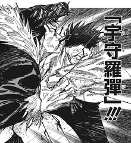
Quebra-gelo Fino (Usurabi): Yuta aplica a técnica de Takako ofensivamente, atingindo a superfície do céu, não seu oponente diretamente. Ele atinge a camada superficial do céu e a quebra como gelo fino, atingindo seu oponente com esse efeito.
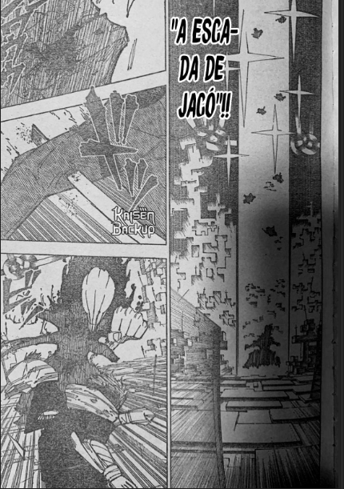
Saída Máxima: Escada de Jacó (Shutsuryoku Saidai: Yakobu no Hashigo): Uma técnica de extensão que lança um pilar de luz sobre um alvo, "apagando" qualquer técnica amaldiçoada sob a luz. Ao contrário de Hana Kurusu, Yuta ativa essa técnica fazendo um sinal de mão. Ao imbuir a Técnica de Extinção na barreira de seu domínio, a Escada de Jacó de Yuta foi garantida para atingir Sukuna, danificando fortemente o Rei das Maldições e enfraquecendo ainda mais a conexão entre ele e o corpo de Megumi Fushiguro.
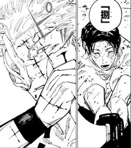
Santuário (Mizushi): Yuta replicou a técnica de Sukuna que lhe permite soltar golpes invisíveis que cortam inimigos. Depois de fazer Sukuna pegar a katana contendo essa técnica, Yuta ativou Cleave, ameaçando cortar o Rei das Maldições com sua própria técnica.
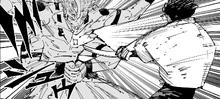
G Equipe de guerra (Jī Senjō): Yuta replicou a técnica de Charles Bernard que lhe permite ver o futuro de um alvo, anexando um painel de mangá a eles e tirando sangue deles. Ao contrário de Charles, Yuta não usa uma ferramenta amaldiçoada de lança semelhante a uma caneta para preencher as condições para a tinta e, em vez disso, usa sua própria espada katana.
Transplante de cérebro: Ao fazer com que Rika consumisse o corpo de Kenjaku, Yuta replicou sua técnica que lhe permite trocar corpos com outra pessoa, transplantando seu cérebro em seu corpo. Usando esta técnica, ele foi capaz de assumir o corpo de Satoru Gojo e usá-lo para combater Sukuna. Essa técnica também permitiu que ele acessasse a expansão de domínio de Gojo.
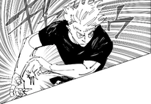
Lapso de Técnica Amaldiçoado: Azul (Jutsushiki Junten・Ao): Ao amplificar o Infinito com mais energia amaldiçoada, o usuário pode convergir infinitamente o espaço em um local escolhido para criar um efeito magnético que atrai o entorno. Yuta tentou usar esta técnica contra Sukuna, mas foi interrompido quando o Rei das Maldições se aproximou dele antes que ele pudesse ativar a técnica.
Manipulação de Energia Amaldiçoada
Técnica Amaldiçoada Reversa (Hanten Jutsushiki): Quando confrontado com os ferimentos terríveis de seus amigos, Yuta foi capaz de explorar o núcleo de sua energia amaldiçoada e desbloquear a capacidade de curar seus ferimentos com a técnica usada reverso. Ele fez isso depois de menos de um ano de experiência em jiu-jitsu. Enquanto a maioria dos feiticeiros não pode usar a técnica amaldiçoada reversa e muito menos pode produzi-la em outros, Yuta foi capaz de aprender a fazer as duas coisas.
Expansões de Domínio
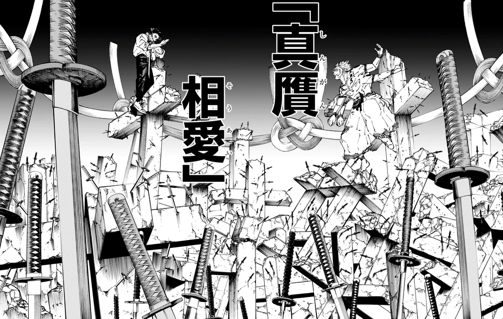
Amor Mútuo Autêntico (Shingan Sōai): O domínio de Yuta é um campo de estruturas em forma de cruz repleto de inúmeras katanas e cercado por cordas amarradas em uma forma simbólica do amor. Yuta pode empunhar qualquer uma das katanas e ativar técnicas amaldiçoadas copiadas sem quaisquer restrições. Uma técnica amaldiçoada copiada também serve como efeito certo do domínio.
Vazio Imensurável (Muryōkūsho): O ambiente do domínio se assemelha ao espaço sideral, com um grande buraco negro, galáxias distantes e numerosas manchas brancas. Os alvos presos dentro desse domínio são paralisados à medida que informações ilimitadas são inundadas em suas mentes. Yuta ganhou acesso a esta expansão de domínio depois de assumir o corpo de Gojo e implantá-lo para enfrentar o Santuário Malevolente de Sukuna.
Satoru Gojo é um dos principais protagonistas da série Jujutsu Kaisen. Ele é um feiticeiro de jujutsu de grau especial e amplamente reconhecido como o mais forte do mundo. Satoru é o orgulho do Clã Gojo, a primeira pessoa a herdar o Ilimitado e os Seis Olhos em quatrocentos anos. Ele trabalha como professor na escola de jujutsu de Tokyo e usa sua influência para proteger e treinar jovens aliados fortes.
Técnica Inata
Ilimitado (Mukagen): No nível básico, Ilimitado é uma técnica inata que é derivada da família Gojo. Esta técnica concede aos seus usuários controle absoluto sobre o espaço através da manipulação de energia amaldiçoada em um nível atômico, resultando em múltiplos resultados e técnicas subsequentes dentro da capacidade geral. Com a manipulação do espaço como apenas o nível básico da técnica, Ilimitado tem três formas padrão e uma "não-padrão" além desta.
Infinito (Mugen): Sendo a forma neutra Ilimitado, o Infinito é comumente conhecido como a capacidade de parar, embora este seja um equívoco comum, pois o verdadeiro poder do Infinito é retardar as coisas. Quando algo tenta atingir Satoru, a pessoa ou objeto em questão atinge o infinito entre ele e o alvo. Satoru pode decidir o que toca ou não nele e pode fazê-lo com base em massa, velocidade e classificações de perigo.
Lapso de Técnica Amaldiçoado: Azul (Jutsushiki Junten・Ao): A versão reforçada do neutro ilimitado; O azul é o subproduto de Gojo amplificando a energia ilimitada e negativa, produzindo um vácuo. Através deles, Gojo cria um cenário onde o próprio mundo é forçado a se corrigir e preencher o espaço negativo, fazendo com que toda a matéria no alcance do espaço comandado seja reunida.
Lapso de Técnica Amaldiçoada - Saída Máxima de Energia Amaldiçoada: Azul (Jutsushiki juntan shutsuryoku saidai・Ao): Satoru cria um centro de gravidade em um espaço específico capaz de atrair toda a matéria, esmagando-a sem esforço semelhante a um buraco negro. Ele também pode mover o ponto de gravidade à vontade, aumentando muito suas capacidades destrutivas.
Reversão de Técnica Amaldiçoada: Vermelho (Jutsushiki Hanten・Aka): Sendo uma inversão do Azul, o Vermelho tem o efeito oposto. Usando sua técnica de reversão para inverter as propriedades do Azul, Satoru ativa a divergência de seu infinito e causa uma força repulsiva extremamente poderosa, repelindo toda a matéria em sua vizinhança. Sendo uma habilidade que é alimentada por energia amaldiçoada positiva e formada como uma técnica de maldição reversa, a habilidade tem duas vezes a capacidade destrutiva do Azul.
Técnica oca: roxo (Kyoshiki・Murasaki): Uma técnica avançada que colide o Lapso e a Reversão do Ilimitado, resultando em uma massa imaginária que é lançada no alvo.
Manipulação de Energia Amaldiçoada
Técnica Amaldiçoada Reversa (Hanten Jutsushiki): No início, enquanto um estudante do primeiro e segundo ano da escola jujutsu, Satoru foi incapaz de compreender a natureza complexa da técnica amaldiçoada reversa, mas depois de ser colocado em seu leito de morte durante sua primeira luta com Toji Fushiguro, Satoru, aproveitando o núcleo da energia amaldiçoada, foi finalmente capaz de desbloquear a capacidade de não apenas curar a si mesmo, mas também fazer a energia positiva fluir para o Infinito, dando-lhe acesso aos seus ataques Vermelho e Vazio Roxo.
Técnicas de Barreira
Cortina (Tobari): Gojo pode criar uma barreira que circunda uma determinada área. A barreira pode isolar a área de outras pessoas ou de uma pessoa específica que queira entrar.
Técnicas Anti-Domínio
Novo estilo de sombra: domínio simples (Shin Kageryū: Kan'i Ryōiki): Uma técnica anti-domínio que Satoru pode usar para resistir ao acerto garantido de qualquer domínio direcionado a ele. Satoru normalmente não precisa recorrer a isso e Yuji nem sabia que poderia fazer isso antes da luta deste último com Sukuna. Ao contrário de Yuki Tsukumo, Satoru não é adequado para ensinar a técnica a outras pessoas.
Queda da Emoção da Flor (Rakka no Jō): Uma arte secreta usada como uma contramedida anti-domínio. Gojo aprendeu quando era criança, mas não o usou antes de sua batalha com Sukuna. Normalmente, essa técnica pode anular os ataques de um domínio, no entanto, devido à avassaladora energia amaldiçoada de Sukuna, ele apenas enfraqueceu o dano do Santuário Malevolente.
Expansão de Domínio
Vazio Imensurável (Muryōkūsho): A expansão de domínio de Satoru cria um espaço metafísico que faz com que as vítimas recebam todo tipo de estímulos e informações infinitamente, restringindo seus processos de pensamento e ações. Em termos de força bruta, o domínio de Satoru é igual ao próprio Santuário Malevolente de Sukuna por dentro, perdendo apenas devido ao domínio aberto do Santuário Malevolente que permitiu que Sukuna destruísse a barreira do Vazio Imensurável. A habilidade de Satoru com sua Expansão de Domínio é tão grande que ele pode controlar com precisão o alcance e o tempo de sua ativação por apenas 0,2 segundos, limitando seu efeito duradouro naqueles que ele prende dentro dela, e é capaz de mudar livremente as condições da barreira do Vazio Imensurável. Aqueles com quem ele faz contato físico também são imunes ao seu efeito.
Habilidades Especiais
Seis Olhos (Rikugan): Não se sabe muito sobre os Seis Olhos, mas sabe-se que eles desempenham algum papel no uso preciso do Ilimitado. Foi afirmado que, semelhante ao Ilimitado, os Seis Olhos também são uma técnica inata herdada através da família Gojo. Yuta afirmou que os Seis Olhos permitem que Satoru reduza seu consumo de energia amaldiçoada da ativação das técnicas infinitamente até quase chegar a 0, e que ele nunca ficará sem energia amaldiçoada em uma luta como resultado disso. É incerto se isso se refere ao custo das técnicas em si ou à redução de perdas desnecessárias para a eficiência.